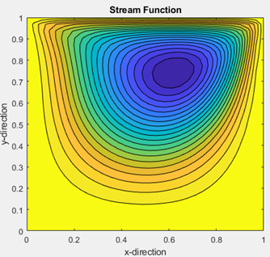

CFD Programming Project
Developed during ME543 – Computational Fluid Dynamics at IIT Guwahati, this project demonstrates numerical solvers written from scratch in C and MATLAB for classic CFD problems.

2D Transient Heat Conduction (Explicit Time-Marching Simulation)
This simulation solves the unsteady two-dimensional heat diffusion equation using an explicit forward-time, central-space (FTCS) finite difference scheme. The solver computes the temperature field at every time step and writes it to output files, which are later used to generate the full-time-evolution video shown here.
∂T/∂t = α ( ∂²T/∂x² + ∂²T/∂y² )
The plate is rectangular (0.3 m × 0.4 m) and initially at 0 K.
Constant boundary temperatures are applied on all sides:
TL = TR = 300 K,
TB = 400 K, and
TT = 500 K.
The grid spacing is Δx = Δy = 0.01 m with a time step
of Δt = 0.03 s and thermal diffusivity
α = 1.1234 × 10⁻⁴ m²/s.
At each iteration, the solver updates interior nodes explicitly using
the diffusion relation and applies fixed-temperature boundary conditions.
All intermediate temperature fields are exported as
output_timestep_XXXX.txt files, enabling a smooth animation
of heat propagation and steady-state approach.
The resulting video captures the transient rise in temperature and the eventual formation of a vertical temperature gradient governed by the imposed boundary conditions.
Continuous transient temperature evolution in a 2D plate (explicit FTCS method, full time-step animation)
Lid-Driven Cavity Flow (Vorticity–Stream Function Method)
This solver computes the 2D incompressible laminar flow inside a square cavity using the vorticity–stream function formulation of the Navier–Stokes equations. The top lid moves horizontally while all other walls remain stationary, producing a primary recirculating vortex and smaller corner eddies.
The domain was discretized into a uniform 32 × 32 grid with
Δx = Δy = 1/31 and a time step of Δt = 0.001.
Boundary vorticity values were imposed using finite-difference approximations of
the no-slip condition. The stream function Poisson equation
∇²ψ = −ω was iteratively solved in a Gauss–Seidel manner
until convergence below 10⁻⁷.
The flow parameters were:
- Domain size
L = 1 - Wall velocity
U = 4.0 - Density
ρ = 1.0 - Viscosity
μ = 0.01 - Reynolds number:
Re = 400
Velocity components were recovered from the stream function as:
u = ∂ψ/∂y, v = −∂ψ/∂x.
Visualization includes velocity contours, vorticity distribution, and streamlines
showing the development of the primary and secondary vortices as steady state is reached.
Lid-Driven Cavity Simulation at Re = 400 (vorticity–stream function solver)
Streamline plot showing main recirculation vortex.
1D Linear Wave Propagation (Advection Equation)
This simulation solves the 1D linear advection equation ∂u/∂t + c ∂u/∂x = 0 using multiple explicit finite difference schemes. The domain length was set to 40 units, discretized with Δx = 1.0 and Courant number (C₀) = 0.6 for stable time stepping (Δt = 0.6).
The program was implemented in C with modular routines for Upwind (1st order), Lax, MacCormack, and Upwind (2nd order) schemes. Periodic boundary conditions were applied to simulate continuous wave motion.
Two different initial conditions were tested:
- Step Function: Represents a sharp discontinuity propagating through the domain.
- Sine Function: A smooth wave form for analyzing dispersion and phase accuracy.
Results were recorded at fixed time intervals and visualized to compare amplitude decay and phase shift among different numerical schemes. The MacCormack scheme produced the most accurate wave profile, maintaining amplitude with minimal diffusion over 20 seconds.
Step initial condition (Co = 0.6)
Sine initial condition (Co = 0.6)